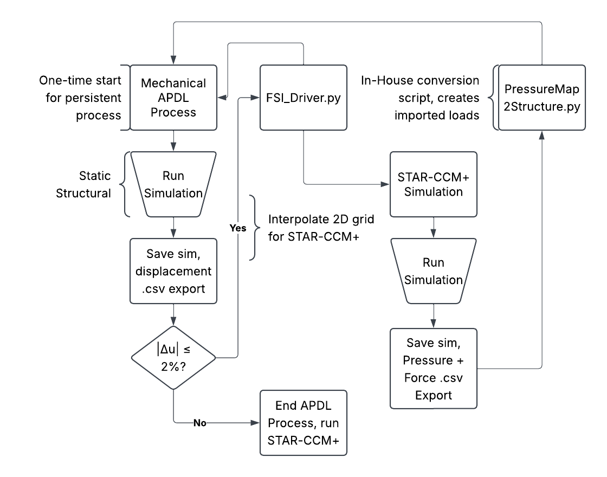
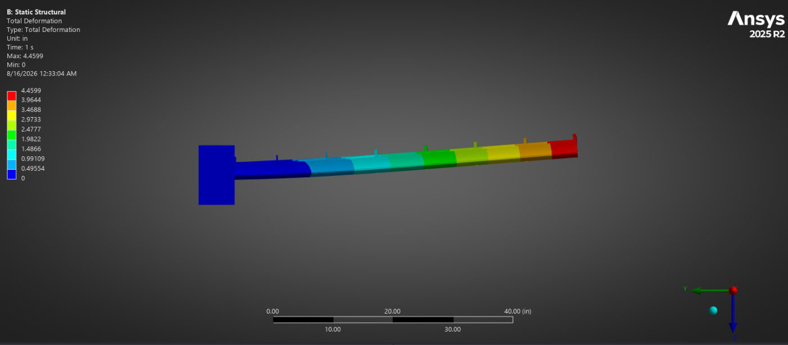
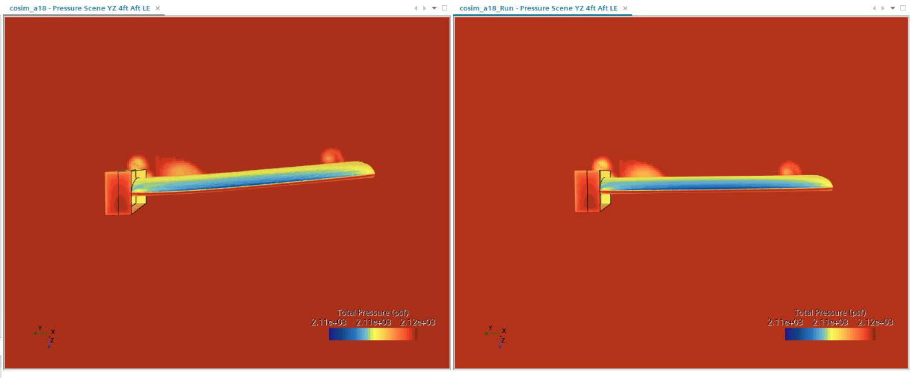

Two-Way Fluid–Structure Interaction Simulation
Coupling Ansys Mechanical APDL and STAR-CCM+ through a Python driver to quantify how a thin-airfoil wing's structural deflection changes its aerodynamic performance.
Key takeaways
- Built a two-way FSI loop between Ansys Mechanical APDL and STAR-CCM+ — two tools with no direct API to each other — using a Python driver plus each program's own automation features.
- Example case: a 5 ft half-span A18 wing with a 3 ft chord deflects 4.46 in at the tip, yet lift changes by only −1.1%, drag by −0.75% and L/D by −0.44% versus the rigid structure.
- Conclusion: for the team's standard wing design, structural deflection has minimal aerodynamic impact; the item to watch is the redirected tip vortex hitting a large horizontal stabilizer.
Overview
After the 2025–2026 SAE Aero Competition season completed, the team did a retrospective and determined that looking at planforms that are low-drag and high-velocity are the key to getting the most out of the ruleset, which was a stark departure from rulesets of years prior. To meet this demand, the team decided to look into potential thin-airfoil structures (<11% thickness) and alternative planforms, such as canards. After performing finite element analysis (FEA) on the derived structure of one of these airfoils, it was revealed that our standard manufacturing methods would cause a wing of 5 ft half span to have a 4.4 inch deflection at the tip, significantly more than in prior years. To quantify further aerodynamic and structural impacts of this deflection, I developed a setup for FSI simulation between our team's validated tools of choice: Ansys Mechanical APDL and STAR-CCM+.
Since STAR-CCM+ doesn't have a direct API with Ansys, I created a Python script to take advantage of each program's automation features and have it run the process that would have been significantly more tedious by hand for more than one iteration of the loop.
Setup

FSI_Driver.py is the script the user runs; the loop exits once the change in displacement between iterations drops below 2%.
A flowchart with the loop setup is seen above. FSI_Driver.py is the Python script that the
user runs, with displacement .csv exports being handled by APDL commands baked into the base
simulation.
The STAR-CCM+ base sim was the same as the one the team traditionally uses but includes a simulation operation to deform the mesh according to the interpolated displacement table taken from Ansys.
The Ansys base sim is also identical to the one the team traditionally uses, outside of one extra APDL
command snippet to export the displacements to a consistently-formatted .csv file.
Results
An example load case of a 5 ft half-span A18 airfoil with a 3 ft chord was run, providing deflections and 2 ft aft flow scenes as seen below.


| Static structure | Deflected structure | % difference | |
|---|---|---|---|
| Lift (lbf) | 47.387 | 46.830 | −1.1% |
| Drag (lbf) | 7.183 | 7.129 | −0.75% |
| L/D | 6.597 | 6.568 | −0.44% |
Challenges & Conclusion
One of the biggest challenges I ran into was learning Ansys's command syntax, as neither I nor anyone on
the team had used APDL commands before (or had experience automating any part of Ansys's workflow), and
Ansys's documentation was not the most user-friendly reference, so setting up the displacement export
script was a challenge. Additionally, although STAR-CCM+ has a file-based co-simulation option using Ansys
.cdb databases, that was for if you wanted to import that direct structure, and it would
track the deformations of the Ansys structure. However, since the goal was to map the structural
displacements directly to the outer mold line of the plane (the main difference between our Ansys and
STAR-CCM+ simulations), the interpolation had to be done outside of the simulation. Therefore, the change
in approach was made from directly using .cdb files to having a Python script interpolate
the exported displacements from Ansys across the entire outer mold line for STAR-CCM+ to deform using the
simulation operations.
The resulting data shows that, with the designed structure, the impact of the structural deflection on aerodynamic numbers using the team's standard wing design is expected to be minimal, with the only area of concern being impacts on large horizontal stabilizers caused by the redirection of the vortex. On the plane last year, our horizontal stabilizer was significantly smaller span-wise than the main wing, so the impacts of this deflection on the horizontal stabilizer are minimal.
The next big step for the FSI loop is to determine whether it is possible and resource-friendly to simulate a structural deformation including the team's heat-shrink covering. This requires an initial thermal condition across a thin sheet of polyethylene, and requires more resources than initially expected. This portion of the investigation will continue once Ansys is functional on Texas A&M HPRC's systems, since the significance of the covering to the structural rigidity of the plane is still unquantified.